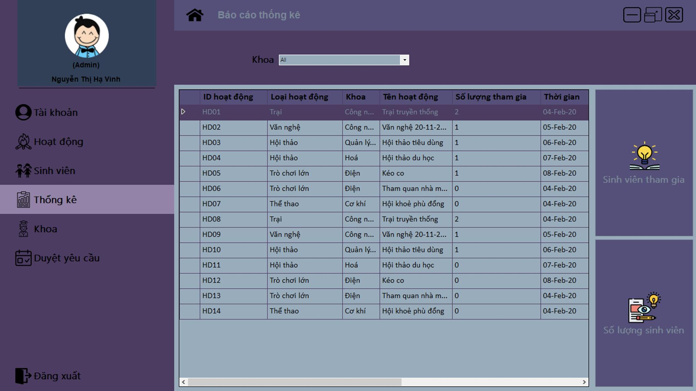
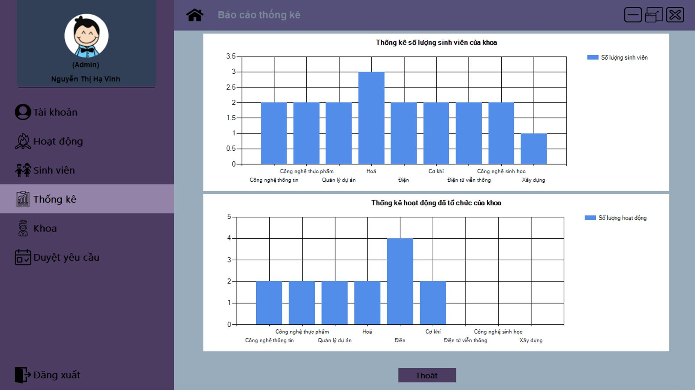
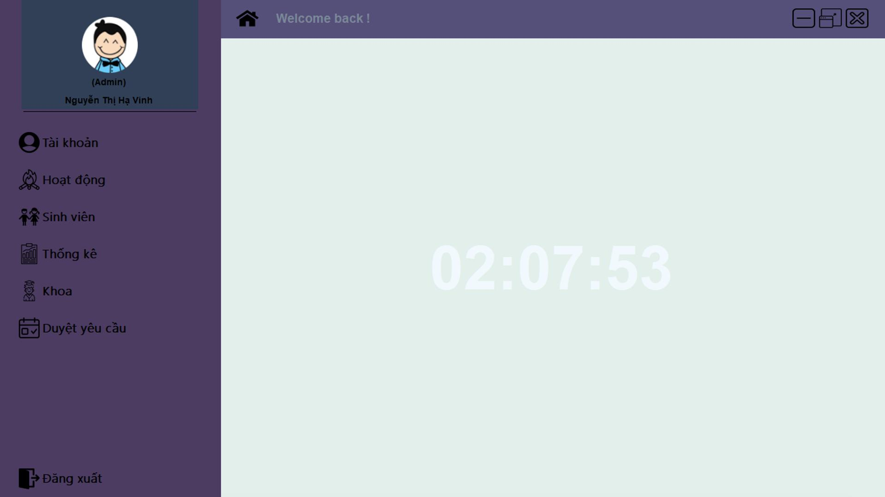
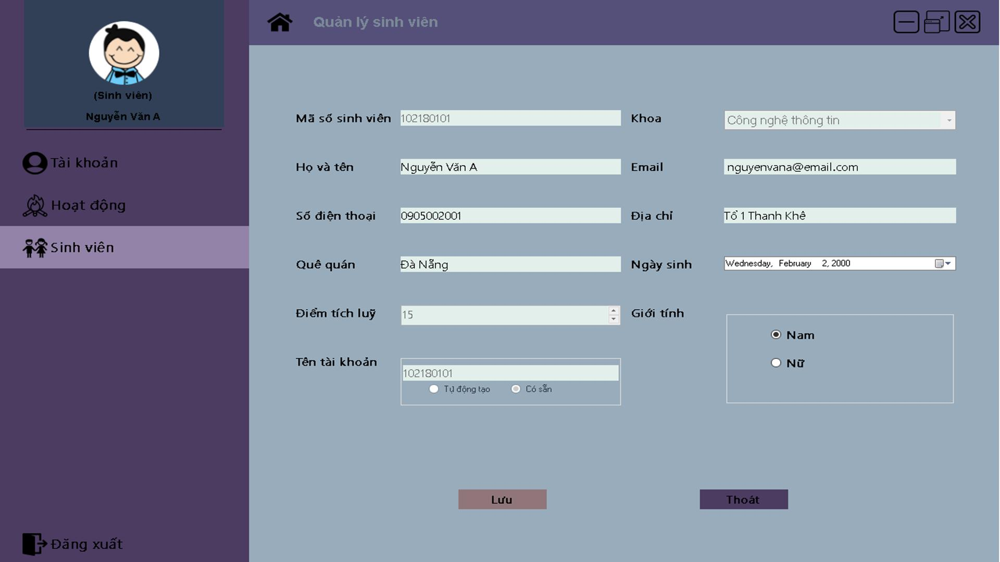
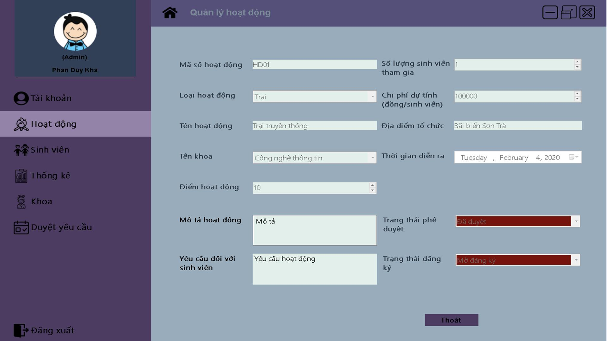
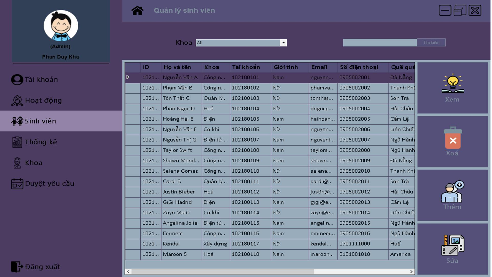
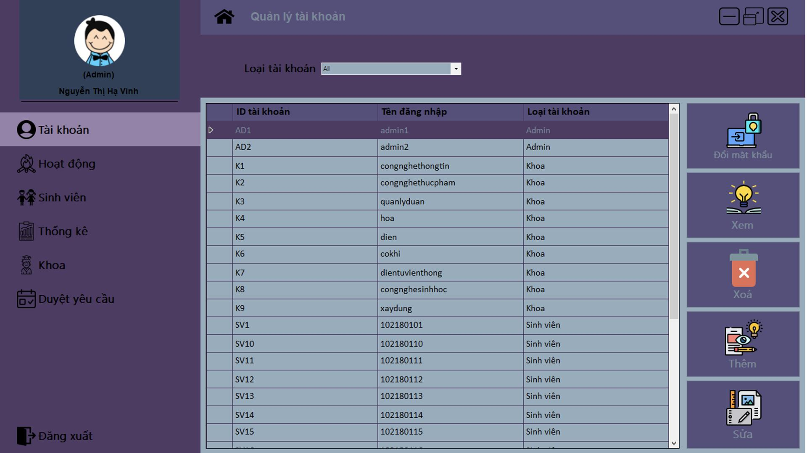
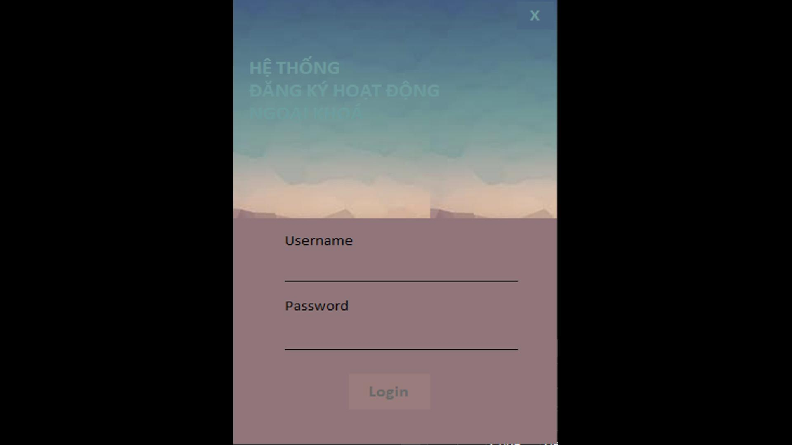
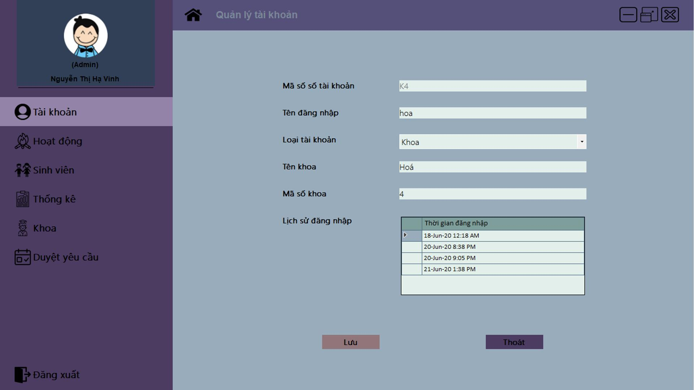
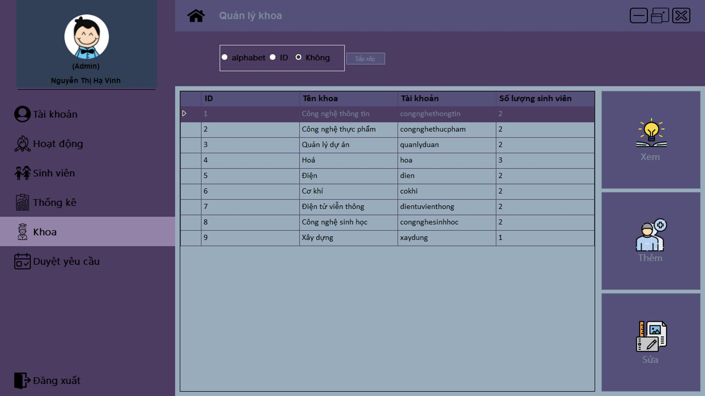

The application simplifies the process of capturing information about extracurricular activities, allowing users to quickly input details such as event names, dates, and descriptions. User-friendly forms and interfaces ensure a seamless experience, enabling efficient data entry.

University Activity Manager provides a centralized hub for users to manage a variety of extracurricular engagements, from club participation to event organization. Users can easily view, edit, and categorize their activities, fostering a comprehensive understanding of their involvement.

The application introduces a reward points system, incentivizing active participation in extracurriculars. Users accumulate points for each documented activity, contributing to a dynamic and motivating reward system.

Users can track their progress in earning reward points over time, gaining insights into their overall involvement and dedication to extracurricular pursuits. Visual representations, such as charts and graphs, offer a clear overview of accomplishments.

The reward points earned through active engagement contribute to achieving graduation milestones. As users accumulate points, they unlock recognition and privileges, enhancing their overall university experience.

The application leverages the capabilities of Windows Forms, providing a responsive and user-friendly interface. Windows Forms .NET ensures a consistent and visually appealing experience across different Windows devices.

University Activity Manager utilizes SQL for its backend database, ensuring secure and reliable storage of user data. SQL facilitates efficient data retrieval and storage, enhancing the overall performance of the application.

The application prioritizes user experience with an intuitive design that caters to the needs of students. Navigational ease and aesthetically pleasing interfaces contribute to an enjoyable and engaging user journey.

